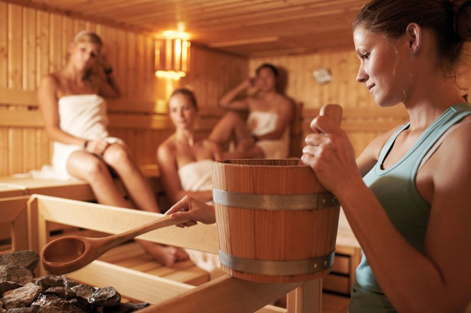

<div class="section spaced">
    <div class="container">
        <div class="row">
            <div class="col-lg-4 col-md-4">
                <h3>Steambath</h3>
                <p>Odbourává stres, pomůže při nespavosti, posiluje imunitu… Saunování má bezpočet pozitivních účinků, 
                    zároveň ale i jasná pravidla. A ne každý je dodržuje.</p>
            </div>
            <div class="col-lg-4 col-md-4">
                <h3>Zážitkové saunování</h3>
                <p> Natáhnout se a nechat z těla společně s potem odcházet i stres a únavu. Jestliže saunování nešidíte, 
                    je pobyt v sauně sám o sobě rituálem, během kterého si člověk odpočine.</p>
            </div>
            <div class="col-lg-4 col-md-4">
                <h3>Zázračná sauna</h3>
                <p>Během jedné návštěvy sauny se z těla odplaví zhruba tolik toxinů, kolik činností ledvin za celý týden. 
                   A to jsme ve výčtu pozitivních účinků sauny na úplném začátku.</p>
            </div>
        </div>        
    </div>
</div>
